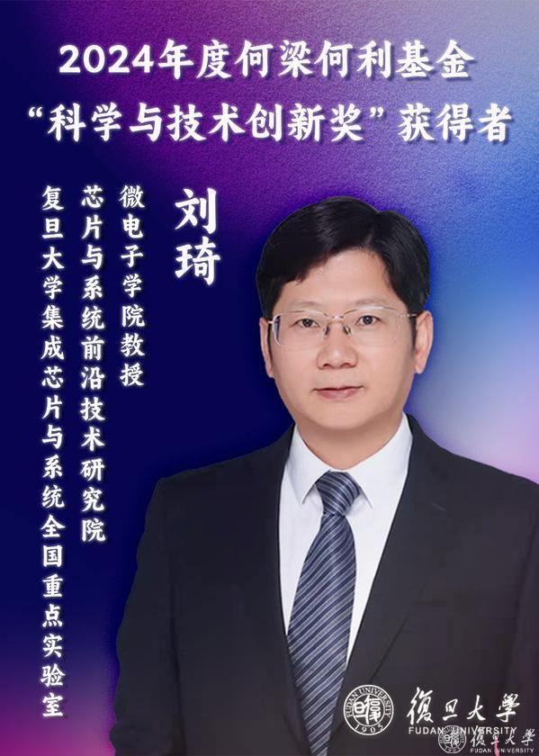

Group recognition
Professor Qi Liu Receives the 2024 Ho Leung Ho Lee Foundation Prize for Scientific and Technological Innovation
On 3 December 2024, the Ho Leung Ho Lee Foundation held its 2024 Science and Technology Award ceremony in Beijing. Professor Qi Liu of the Memory and Computing Group received the Ho Leung Ho Lee Foundation Prize for Scientific and Technological Innovation. This marks the first time that a Fudan University researcher has received the Innovation Prize.
2024 年 12 月 3 日，2024 年度何梁何利基金科学与技术奖颁奖典礼在北京举行。Memory and Computing Group 刘琦教授荣获何梁何利基金科学与技术创新奖。这是复旦大学科研人员首次获得该创新奖项。

Memory is a fundamental basis of information processing. Professor Liu has worked on emerging memory technologies for nearly two decades. His research has established innovative experimental approaches to reveal resistive-switching mechanisms at the nanoscale, identify the governing principles of memory-performance modulation, and develop control strategies such as dopant engineering. These contributions have provided a scientific foundation for high-performance resistive random-access memory (RRAM) devices.
As a key contributor, Professor Liu has participated in the development of large-scale RRAM integration technologies and in the creation of several internationally leading RRAM, computing-in-memory, and neuromorphic chips. Through collaborations with industry, he has also helped advance a series of chips incorporating embedded RRAM, supporting the practical application of RRAM technologies. Professor Liu holds 85 granted Chinese invention patents and 16 granted U.S. patents; several of these patents have been transferred or licensed to domestic integrated-circuit manufacturers.
Professor Liu’s previous honours include the Second Prize of the National Natural Science Award as the second-ranked contributor, the First Prize of the Chinese Institute of Electronics Science and Technology Award as the second-ranked contributor, the Chinese Academy of Sciences Outstanding Science and Technology Achievement Award, and the Chinese Academy of Sciences Youth Scientist Award.
Established in 1994, the Ho Leung Ho Lee Foundation recognises Chinese researchers for outstanding achievements and major innovations in science and technology. Its awards include the Prize for Scientific and Technological Achievement, the Prize for Scientific and Technological Progress, and the Prize for Scientific and Technological Innovation, with discipline-specific awards spanning fields such as physics, medicine, and pharmacy. To date, 25 researchers from Fudan University have received Ho Leung Ho Lee Foundation science and technology awards: one Achievement Prize recipient, Su Buqing; 23 Progress Prize recipients; and one Innovation Prize recipient.
存储是信息处理的核心基础。刘琦教授深耕新型存储器研究近二十年，建立了创新实验方法，在纳米尺度揭示阻变机理，发现存储性能调控规律，并提出掺杂改性等调控策略，为高性能阻变存储器件的发展奠定了科学基础。
作为核心成员，刘琦教授参与开发了阻变存储器大规模集成技术，研制出多款具有国际领先水平的阻变存储、存算一体及类脑芯片，并与企业合作推出嵌入式阻变存储器系列芯片产品，推动阻变存储技术的产业应用。刘琦教授获授权中国发明专利 85 项、美国专利 16 项，部分专利已转移或许可给国内集成电路制造企业。
刘琦教授曾获国家自然科学二等奖（排名第二）、中国电子学会科学技术一等奖（排名第二）、中国科学院杰出科技成就奖、中国科学院青年科学家奖等荣誉。
何梁何利基金于 1994 年设立，旨在奖励在科学技术领域取得杰出成就和重大创新的中国科技工作者，促进科学技术发展。该基金设有科学与技术成就奖、科学与技术进步奖及科学与技术创新奖，并按学科领域设置物理学、医学、药学等多个奖项。截至目前，复旦大学共有 25 位科研人员获得何梁何利基金科学与技术奖，其中包括成就奖 1 人（苏步青）、进步奖 23 人及创新奖 1 人。